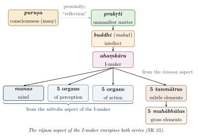
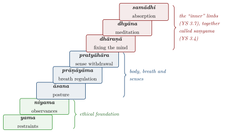

Chapter 3: Models of the Mind¶
yogaś cittavṛttinirodhaḥ
Yoga is the stilling of the fluctuations of the mind.
— Yogasūtra 1.2
3.1 Introduction¶
The Upaniṣads ask what the self is; the philosophical schools (darśana) that took shape in the following centuries ask, in addition, how the mind works. Each school developed a model of the mind — its components, its relation to the self and the body, the process by which it knows — that fitted its wider metaphysics. This chapter presents five such models: the Sāṃkhya account of the evolutes of matter, the Yoga account of the mind and its fluctuations, the Nyāya–Vaiśeṣika account of the mind as an atomic inner sense, the Jain account of the soul and its karmic coverings, and the Āyurvedic account of the mind as an object of medical care. It also considers the materialist dissent, the theories of error, the pre-systematic psychology of the Mahābhārata and the subtle body of Tantra, and two subjects that the Sanskrit schools leave out: the Tamil accounts of inner life (Section 3.11) and what the classical theories said about women’s minds (Section 3.12). The Buddhist models are treated separately in Chapter 5, and Vedānta in Chapter 4.
3.2 Sāṃkhya: Consciousness and the Evolutes of Matter¶
3.2.1 The Framework¶
Sāṃkhya is one of the oldest systematic schools of Indian thought. Its ideas appear in the Upaniṣads and the Mahābhārata, and it was given classical form in Īśvarakṛṣṇa’s Sāṃkhyakārikā, a work of seventy-two verses usually dated to the fourth or fifth century CE (Larson 1979; Larson and Bhattacharya 1987). The tradition names the sage Kapila as its founder.
Sāṃkhya is a dualism. There are two kinds of reality: consciousness (puruṣa), of which there are many, each pure, inactive and merely witnessing; and primal matter (prakṛti), one, unconscious and constantly changing. Everything other than consciousness — including the intellect, the ego and the mind — is a product of matter. The distinctive and, to modern readers, surprising feature of Sāṃkhya is thus that it counts the mind on the material side of its dualism. What makes mental events conscious is not the mind itself but the proximity of the puruṣa, whose light, as it were, is reflected in the intellect.
3.2.2 The Three Strands¶
Matter consists of three strands or qualities (guṇa): sattva (lightness, illumination, pleasure), rajas (activity, stimulation, pain) and tamas (heaviness, obstruction, dullness). Every thing and every mental state is a particular balance of the three.
Sāṃkhyakārikā 13
sattvaṃ laghu prakāśakam iṣṭam upaṣṭambhakaṃ calaṃ ca rajaḥ |
guru varaṇakam eva tamaḥ pradīpavac cārthato vṛttiḥ ||
Sattva is held to be light and illuminating, rajas stimulating and moving, tamas heavy and enveloping. Their functioning serves a single purpose, like a lamp.
The final simile — a lamp, in which oil, wick and flame, though different, cooperate to give light — explains how three opposed qualities can work together. The theory of the guṇas became common property of Indian thought; the Bhagavad Gītā (chapters 14, 17 and 18) uses it to classify food, faith, knowledge, action and temperament, and Āyurveda uses it to classify minds.
3.2.3 The Twenty-Five Principles¶
From unmanifest matter evolve twenty-three manifest principles. Together with matter itself and consciousness, they make the twenty-five principles (tattva) of the system (Table 3.1); Figure 3.1 shows the order in which they evolve.
| Principle | Number | Notes |
|---|---|---|
| puruṣa (consciousness) | 1 | Neither produced nor productive; many |
| prakṛti (primal matter) | 1 | Productive but not produced |
| buddhi or mahat (intellect) | 1 | First evolute; ascertainment |
| ahaṃkāra (I-maker) | 1 | Self-appropriation |
| manas (mind) | 1 | Inner sense; deliberation |
| organs of perception | 5 | Hearing, touch, sight, taste, smell |
| organs of action | 5 | Speech, hands, feet, excretion, generation |
| subtle elements (tanmātra) | 5 | Sound, touch, form, taste, smell |
| gross elements (mahābhūta) | 5 | Space, air, fire, water, earth |
| Total | 25 | puruṣa + prakṛti + 23 evolutes |

3.2.4 Arguments for Consciousness and Matter¶
Sāṃkhya did not simply assert its dualism; it argued for it. Against those who held that effects are new creations, it defended the doctrine that the effect pre-exists in its material cause (satkāryavāda): what is non-existent cannot be brought into being (SK 9), just as, the commentators add, oil can be pressed from sesame but not from sand. Hence the world of experience must pre-exist in an unmanifest cause, primal matter. For the existence of consciousness distinct from matter, the Kārikā gives five reasons (SK 17): composite things exist for the sake of something else, as a bed exists for a sleeper; there must be something that is the opposite of the three guṇas; there must be a controller; there must be an experiencer; and there is activity directed towards isolation, which implies someone to be isolated. The first argument — that the complex apparatus of body and mind is “for another” and must therefore serve a being that is not itself complex — became a standard argument for the self in Indian philosophy.
3.2.5 The Inner Organ¶
The intellect, the I-maker and the mind together form the “inner organ” (antaḥkaraṇa). The Sāṃkhyakārikā defines each by its function:
-
The intellect is ascertainment (adhyavasāyo buddhiḥ, SK 23). In its sāttvika form it has four dispositions — virtue, knowledge, dispassion and mastery — and in its tāmasa form their opposites; these eight dispositions (bhāva) determine the course of a person’s life.
-
The I-maker is self-appropriation (abhimāno ’haṃkāraḥ, SK 24). It produces two series of evolutes: from its sāttvika aspect the mind and the ten organs, from its tāmasa aspect the five subtle elements, with its rājasa aspect energising both (SK 25).
-
The mind is “of the nature of both” (organ of perception and of action) and is characterised by deliberation (saṅkalpaka, SK 27).
The process of cognition runs in a fixed order (SK 30–36): the external organs grasp their objects; the mind deliberates on what they present; the I-maker appropriates it; and the intellect ascertains it, presenting the whole to the puruṣa. The organs, the Kārikā says, are like lamps that illuminate the object and hand it on to the intellect for the sake of the puruṣa.
Because the puruṣa is the opposite of the three guṇas, the Kārikā (SK 19) ascribes to it the character of a witness (sākṣitva), isolation, neutrality, the nature of a seer and non-agency. Yet in ordinary experience the qualities of the two are confused: the unconscious intellect appears conscious, and the inactive puruṣa appears to act, “as it were” (SK 20). This mutual misattribution is the Sāṃkhya counterpart of the Advaita doctrine of superimposition (Chapter 4).
The goal of the system is discriminative knowledge: the realisation that the puruṣa is not the intellect or any other product of matter. When that knowledge arises, matter, “like a dancer who has shown herself to the audience” (SK 59), ceases to perform for that puruṣa, which abides in isolation (kaivalya).
3.3 Yoga: The Mind and Its Fluctuations¶
3.3.1 Text and Date¶
The Pātañjalayogaśāstra — the 195 sūtras attributed to Patañjali together with the commentary (bhāṣya) traditionally ascribed to Vyāsa — is now generally regarded by scholars as a single work, composed c. 325–425 CE (Maas 2013). It adopts much of the Sāṃkhya metaphysics but adds a personal Lord (īśvara) and, above all, a detailed analysis of meditation. Its psychology is centred on citta, “mind”, a term that covers the whole inner organ.
3.3.2 The Five Fluctuations¶
The mind is constantly modified by “fluctuations” or “turnings” (vṛtti), of which there are five kinds (YS 1.5–11), each of which may be afflicted (kliṣṭa) or unafflicted (akliṣṭa) (Table 3.2).
| Vṛtti | Translation | Definition (paraphrased) | YS |
|---|---|---|---|
| pramāṇa | Valid cognition | Perception, inference and testimony | 1.7 |
| viparyaya | Error | False knowledge not based on the real form of the object | 1.8 |
| vikalpa | Conceptual construction | Cognition following words, without a corresponding object | 1.9 |
| nidrā | Sleep | The fluctuation whose support is the cognition of absence | 1.10 |
| smṛti | Memory | The not-losing of an experienced object | 1.11 |
The inclusion of sleep among the fluctuations is notable. Patañjali holds that dreamless sleep is itself a modification of the mind, a cognition whose support is absence, since on waking one remembers having slept. The Advaitins of the Vivaraṇa school also treat deep sleep as an experience that is later remembered — an experience of bliss and of ignorance (Section 4.4) — but they assign it to the witness-consciousness and to a mode of ignorance, not to the mind, which they hold to be withdrawn into its cause in sleep. The Naiyāyikas, by contrast, deny that there is any cognition in dreamless sleep at all (Section 2.5).
3.3.3 Practice and Dispassion¶
The fluctuations are stilled “by practice and dispassion” (abhyāsavairāgyābhyāṃ tannirodhaḥ, YS 1.12). Practice is the effort to remain in stillness, made firm by long, uninterrupted and respectful cultivation (YS 1.14); dispassion is the mastery of one who no longer thirsts for seen or heard-of objects (YS 1.15). The pairing of a positive discipline with a withdrawal of craving recurs throughout Indian contemplative literature.
3.3.4 The Afflictions¶
The second chapter of the Yogasūtra analyses the roots of suffering as five afflictions (kleśa).
Yogasūtra 2.3
avidyāsmitārāgadveṣābhiniveśāḥ kleśāḥ
The afflictions are ignorance, I-am-ness, attachment, aversion and clinging to life.
Ignorance is the field of the others, and is defined as taking the impermanent, impure, painful and not-self to be permanent, pure, pleasant and self (YS 2.5). I-am-ness (asmitā) is the identification of the power of seeing with the instrument of seeing (YS 2.6); attachment and aversion follow on pleasure and pain (YS 2.7–8); and clinging to life (abhiniveśa) is present “even in the wise” (YS 2.9). The afflictions may be dormant, attenuated, interrupted or active (YS 2.4), and the purpose of the practices of the second chapter — austerity, self-study and devotion to the Lord (kriyāyoga, YS 2.1), and the eight limbs (YS 2.29) — is to attenuate them.
3.3.5 Obstacles and Remedies¶
Patañjali lists nine obstacles (antarāya) that distract the mind (YS 1.30): sickness, mental inertia, doubt, carelessness, sloth, lack of detachment, false perception, failure to attain a stage of practice, and instability in a stage once attained. They are accompanied, he says, by pain, dejection, trembling of the body and irregular breathing (YS 1.31). Among the remedies he recommends is the cultivation of four attitudes towards others:
Yogasūtra 1.33
maitrīkaruṇāmuditopekṣāṇāṃ sukhaduḥkhapuṇyāpuṇyaviṣayāṇāṃ bhāvanātaś cittaprasādanam
The mind becomes clear through cultivating friendliness towards the happy, compassion towards the suffering, gladness towards the virtuous and equanimity towards the wicked.
The four attitudes are the same as the Buddhist “divine abidings” (Chapter 5), one of many points at which Yoga and Buddhism share a vocabulary of practice. The passage is notable for its recognition that the clarity of the mind depends on one’s emotional relations with others, not only on solitary concentration.
3.3.6 The Eight Limbs¶
The best-known part of the Yogasūtra is its scheme of eight limbs (aṣṭāṅga, YS 2.29), which became the standard outline of yogic practice (Table 3.3 and Figure 3.2).
| Limb | Content | |
|---|---|---|
| 1 | yama (restraints) | Non-violence, truthfulness, not stealing, sexual restraint, non-possessiveness (YS 2.30) |
| 2 | niyama (observances) | Purity, contentment, austerity, self-study, devotion to the Lord (YS 2.32) |
| 3 | āsana (posture) | A posture that is steady and comfortable (YS 2.46) |
| 4 | prāṇāyāma | Regulation of inhalation and exhalation (YS 2.49) |
| 5 | pratyāhāra | Withdrawal of the senses from their objects (YS 2.54) |
| 6 | dhāraṇā | Fixing the mind on one place (YS 3.1) |
| 7 | dhyāna | Continuous flow of cognition on that object (YS 3.2) |
| 8 | samādhi | The object alone shining forth, as if empty of its own form (YS 3.3) |
Two points deserve emphasis. First, the scheme begins with ethics: the restraints and observances are prerequisites for the meditative limbs, and the restraints are described as a “great vow” valid for all times and places (YS 2.31). Secondly, āsana in the Yogasūtra means simply a seated posture suitable for meditation; the elaborate postural practice associated with “yoga” today developed in the Haṭha Yoga texts of the second millennium and, in its modern forms, largely in the twentieth century (Mallinson and Singleton 2017). The history of yoga is treated in Volume 5 of this series.

3.3.7 Powers and Their Dangers¶
The third chapter of the Yogasūtra describes the extraordinary powers (vibhūti, siddhi) said to arise from saṃyama, the combined practice of the three inner limbs on particular objects: knowledge of past and future, of previous births, of others’ minds, the power of becoming invisible, and many more. Whatever one makes of these claims, the text’s own attitude to them is instructive: “these are obstacles to absorption, though they are powers when the mind is outward-turned” (te samādhāv upasargā vyutthāne siddhayaḥ, YS 3.37). Even the highest powers are to be renounced, since attachment to them prolongs bondage. The warning recurs throughout Indian contemplative literature, Buddhist as well as Brahmanical, and it is a reminder that the goal of these disciplines was understood as freedom, not the acquisition of abilities.
3.3.8 Impressions and Their Cultivation¶
Each fluctuation leaves an impression (saṃskāra) in the mind; impressions give rise to further fluctuations; and clusters of impressions form dispositions (vāsanā) that persist, according to the text, across lifetimes:
Yogasūtra 4.9
jātideśakālavyavahitānām apy ānantaryaṃ smṛtisaṃskārayor ekarūpatvāt
There is continuity [of dispositions] even when they are separated by birth, place and time, because memory and impressions have the same form.
The theory makes the mind’s present state a product of its past and gives the Yoga practitioner a strategy: to deliberately cultivate impressions that counteract harmful ones. YS 2.33–34 recommends, when one is troubled by unwholesome thoughts such as the wish to harm, cultivating their opposite (pratipakṣabhāvanam) by reflecting that such thoughts have endless fruit in suffering and ignorance. The idea that habitual thoughts can be deliberately replaced is often likened to cognitive restructuring (Section 1.10); but Patañjali’s examples are thoughts of violence, falsehood and greed, and his justification is the doctrine of karma.
3.3.9 Karma and the Mind¶
The Yogasūtra incorporates a theory of karma into its psychology. The “store of karma” (karmāśaya), rooted in the afflictions, ripens in the form of birth, length of life and experience (YS 2.12–13). Actions are classed by their moral quality: those of ordinary people are white, black or mixed, while the action of the yogin is “neither white nor black” (YS 4.7), because it is performed without the afflictions that would bind. From the karma that ripens, only those dispositions (vāsanā) manifest that are suited to the resulting birth (YS 4.8). The analysis links the psychology of impressions to the ethics of action: the quality of the mind from which an action springs determines its consequences, and the goal is action that leaves no binding trace.
3.3.10 Levels of the Mind and Stages of Concentration¶
Vyāsa’s commentary on YS 1.1 classifies minds into five “grounds” (bhūmi): scattered (kṣipta), dominated by rajas; stupefied (mūḍha), dominated by tamas; distracted (vikṣipta), occasionally steady; one-pointed (ekāgra); and restrained (niruddha). Yoga proper belongs to the last two.
The Yogasūtra then describes a graded series of meditative absorptions. “Cognitive” absorption (samprajñāta samādhi) is accompanied by gross reflection (vitarka), subtle reflection (vicāra), joy (ānanda) and the sense “I am” (asmitā) (YS 1.17); in the vocabulary of YS 1.41–44 these become the “coalescences” (samāpatti) with gross and subtle objects, with and without verbal-conceptual admixture. Beyond these lies the “other” absorption of YS 1.18, in which only impressions remain — called by the commentators absorption without cognition (asamprajñāta) — and finally “seedless” absorption (nirbīja, YS 1.51), in which even the impressions are stilled. The commentators debate how these terms relate to each other; the text itself is terse. What the scheme shows is a sustained attempt to describe, from within the practice, how attention becomes progressively more unified (Bryant 2009; Larson and Bhattacharya 2008).
3.4 Nyāya–Vaiśeṣika: The Mind as an Atomic Inner Sense¶
The realist schools of Nyāya and Vaiśeṣika give the mind a modest role. The self (ātman) is an eternal, all-pervading substance; cognition (buddhi, jñāna), pleasure, pain, desire, aversion, effort, merit, demerit and dispositions (saṃskāra) are its qualities. Consciousness, on this view, is not the essence of the self but a quality that arises in it only when the right conditions are present. In liberation, accordingly, the self is without cognition.
The mind (manas) is an atomic, internal sense organ, one for each self. Its existence is inferred from a simple observation:
Nyāyasūtra 1.1.16
yugapajjñānānutpattir manaso liṅgam
The non-arising of [several] cognitions at once is the mark of the mind.
Several senses may be in contact with their objects at the same moment, yet we have only one cognition at a time. Something must therefore select which sensory contact becomes a cognition: that selector is the mind, which, being atomic, can be joined to only one sense at a time. The argument amounts to a theory of attention as a bottleneck. Nyāya also used the mind to explain inner perception: we perceive our own pleasures, pains and cognitions through the mind as an inner sense.
3.4.1 The Faults: Desire, Aversion, Delusion¶
Nyāya, though often thought of only as a school of logic, also had an account of the emotions, framed by its concern with liberation. The Nyāyasūtra (1.1.2) traces suffering through a causal chain: false knowledge gives rise to faults (doṣa), faults to activity, activity to birth, and birth to suffering; liberation comes from removing each link by removing the one before it, starting with false knowledge. The faults are of three kinds — desire (rāga), aversion (dveṣa) and delusion (moha) (NS 4.1.3) — and the commentators classify the many emotions under these three heads: lust, avarice and longing under desire; anger, envy, malice and resentment under aversion; error, doubt, pride and negligence under delusion. The scheme parallels the Buddhist three roots (Chapter 5) and the Yoga afflictions, and shows that the realist schools, too, located the source of bondage in the emotional life.
3.4.2 Mīmāṃsā: The Self as Agent¶
The Mīmāṃsā school, whose concern was the interpretation of Vedic ritual injunctions, needed a self that could perform rites in this life and enjoy their results in another. Its two main branches, following Kumārila Bhaṭṭa and Prabhākara (both 7th century), agreed that the self is eternal and distinct from the body, but disagreed about how it is known. Kumārila held that the self is known in the “I”-cognition (ahaṃpratyaya) as an object of awareness; Prabhākara held that the self is never an object but is revealed, together with the object and the act of knowing, in every cognition. The Mīmāṃsakas’ insistence on the self as agent and enjoyer of the results of action set them against both the Buddhists and the Advaitins, and their theory of cognition was among the most influential in Indian philosophy.
3.4.3 The Definition of Perception¶
The Nyāyasūtra (1.1.4) defines perception as “cognition produced by the contact of a sense organ with its object, which is not verbal (avyapadeśya), not erroneous (avyabhicārin) and of a determinate nature (vyavasāyātmaka)”. Each qualification excludes something: cognition derived from words, mistaken cognition such as the mirage, and doubtful cognition such as “is it a man or a post?”. The commentators debated the exact force of each term, and the debate about whether perception can be “non-verbal” and yet “determinate” led directly to the distinction between indeterminate and determinate perception discussed next. The definition is a good example of the precision of the Nyāya method: a single sentence, carefully constructed, that separates perception from its rivals and its counterfeits.
3.4.4 Two Stages of Perception¶
From the sixth century onwards Nyāya and other schools distinguished between indeterminate perception (nirvikalpaka), in which an object is grasped without being qualified by a name or class, and determinate perception (savikalpaka), in which it is cognised as “this is a pot”. The Buddhist epistemologists Dignāga and Dharmakīrti held that only the first is genuine perception and that all conceptual determination is a construction of the mind; the Naiyāyikas and Mīmāṃsakas held that determinate perception is also valid. This debate about the role of concepts in perception is one of the most sophisticated in Indian philosophy (Matilal 1986).
3.4.5 Impressions and Memory¶
The Vaiśeṣika philosopher Praśastapāda (6th century) distinguished three kinds of saṃskāra, a word that covers any persisting disposition: velocity (vega), by which a moving object keeps moving; elasticity (sthitisthāpaka), by which a bent thing returns to its shape; and the mental impression (bhāvanā) left by a cognition, which, when revived by a suitable cue, produces memory. Memory is thus explained mechanically, by a trace in the self, and the conditions that revive a trace — attention, repetition, resemblance, association — were discussed in some detail. The Nyāya philosophers listed many causes of recollection, among them attention, association, repetition, similarity, relation and contrast.
3.4.6 Memory as an Argument for the Self¶
The phenomenon of memory and recognition was the battlefield of the debate between the Brahmanical schools and the Buddhists about the self. If, as the Buddhists held, there is only a stream of momentary events, how can I remember today what I experienced yesterday, or recognise a person as “the same man I saw before”? The Nyāya, Mīmāṃsā and Vedānta philosophers argued that memory and recognition require a single enduring subject who had the original experience and now recalls it; one person cannot remember what another person saw. The Buddhists replied that causal continuity within a single stream is enough: a later moment can carry the impressions of an earlier one in the same series, as a seed carries the character of its parent plant, without any enduring self. The exchanges, which continued for more than a thousand years, are among the most sophisticated discussions of personal identity in any philosophical tradition (Matilal 1986).
3.5 The Materialist Dissent¶
Not every Indian thinker believed in a self distinct from the body. The materialists, called Cārvākas or Lokāyatas (“those who follow the world”), held that only what is perceived exists, that there is no soul surviving death, and that consciousness is a product of the body. Their own texts are lost; their views are known from the summaries and refutations of their opponents, who quote fragments of a lost Bṛhaspatisūtra. According to these reports the materialists explained consciousness by analogy with the intoxicating power that arises when certain ingredients are fermented together, though none of the ingredients is intoxicating by itself: so consciousness arises when the four elements are combined in the form of a living body, and ceases when the body perishes.
The materialists’ arguments — that we never observe consciousness apart from a living body, that the mind is affected by food, drink and illness, and that inference cannot establish what lies beyond experience — were taken seriously enough to be refuted at length by Buddhists, Jains, Naiyāyikas and Vedāntins. Śaṅkara devotes a section of his commentary on the Brahmasūtra (3.3.53–54) to answering them. The presence of this dissenting voice is a reminder that the Indian tradition was not unanimous about the self, and that the arguments for a non-material self were developed in response to real opposition.
3.6 Theories of Perceptual Error¶
When a person sees a shell and takes it for silver, what exactly does he perceive? The schools gave different answers, and the resulting theories of error (khyātivāda) became a standard topic of Indian epistemology (Rao 1998). Table 3.4 summarises the principal theories.
| Theory | School | What is “seen” in error |
|---|---|---|
| ātmakhyāti | Yogācāra Buddhists | A form of consciousness itself, projected as external |
| asatkhyāti | Attributed to the Mādhyamikas | Something non-existent |
| akhyāti | Prābhākara Mīmāṃsā | Nothing false: a perception and a memory fail to be distinguished |
| viparītakhyāti | Bhāṭṭa Mīmāṃsā (Kumārila) | A real object apprehended as another real object |
| anyathākhyāti | Nyāya | A real object (silver elsewhere) presented in the wrong place |
| anirvacanīyakhyāti | Advaita Vedānta | An object neither real nor unreal, indeterminable |
| satkhyāti | Rāmānuja (Viśiṣṭādvaita) | Something real, since all things contain all elements |
The debate is philosophical, but it rests on careful observation of how errors arise and are corrected, and it raises questions — about the role of memory in perception and about the constructive character of perceiving — that are also asked in modern psychology.
3.7 Jain Psychology: The Soul and Its Coverings¶
The Jain tradition, whose classical systematic statement is Umāsvāti’s Tattvārthasūtra (between the second and fifth centuries CE), defines the living being (jīva) by consciousness: “the mark [of the soul] is cognitive activity” (upayogo lakṣaṇam, TS 2.8). The soul is by nature omniscient, blissful and energetic; these qualities are obscured by karma, which the Jains understand as a fine matter that flows into the soul when it acts under the influence of passion and binds to it (Jaini 1979).
3.7.1 Five Kinds of Knowledge¶
The Tattvārthasūtra (1.9) lists five kinds of knowledge: sensory and mental cognition (mati), knowledge from testimony and scripture (śruta), clairvoyance (avadhi), direct knowledge of others’ minds (manaḥparyāya) and omniscience (kevala). The first two are mediated (parokṣa) because they depend on the senses and the mind; the last three are direct (pratyakṣa) perceptions of the soul itself. The Jain analysis of mati into stages — initial apprehension (avagraha), inquiry (īhā), determination (avāya) and retention (dhāraṇā) — is one of the most detailed Indian accounts of the perceptual process.
3.7.2 The Eight Kinds of Karma¶
| Karma | Effect on the soul |
|---|---|
| jñānāvaraṇīya | Obscures knowledge |
| darśanāvaraṇīya | Obscures perception (undifferentiated awareness) |
| mohanīya | Deludes belief and conduct; includes the passions |
| antarāya | Obstructs giving, gaining, enjoyment and energy |
| vedanīya | Produces pleasant and unpleasant feeling |
| āyus | Determines the length of a life |
| nāma | Determines the body and its features |
| gotra | Determines status (high or low birth) |
Of the eight kinds in Table 3.5, the first four are called “destructive” (ghātiya) because they damage the soul’s own qualities; the other four determine the circumstances of embodiment. The deluding karma includes the four passions (kaṣāya) — anger, pride, deceit and greed — which are the principal causes of new bondage. The soul’s condition is also described by six “colourings” (leśyā), from black to white, which grade its moral and emotional state.
3.7.3 The Passions, the Quasi-Passions and the Colourings¶
The Jain analysis of emotion is unusually systematic, because the passions are themselves a kind of karma and must be classified as precisely as the other kinds (Jaini 1979). Each of the four passions — anger (krodha), pride (māna), deceit (māyā) and greed (lobha) — occurs in four grades of intensity and persistence:
-
the passion “bound to the endless” (anantānubandhin), which sustains wrong belief and the round of rebirth;
-
the passion that “obstructs partial renunciation” (apratyākhyānāvaraṇa), which prevents even the limited vows of a layperson;
-
the passion that “obstructs full renunciation” (pratyākhyānāvaraṇa), which prevents the vows of a mendicant;
-
the “smouldering” passion (saṃjvalana), a residue that remains even in the advanced ascetic and flares up only briefly.
The grades are tied to the stages of purification described below. Right view becomes possible only when the first grade has been suppressed or destroyed; the lay vows require the suppression of the second, the mendicant’s vows that of the third, and the last traces of the fourth, a subtle greed, disappear only in the final stages before omniscience. The tradition illustrates the grades with similes: anger of the first grade is like a line cut in stone, which lasts indefinitely; of the second, like a crack in dried earth, which lasts until the rains; of the third, like a line drawn in sand, which the wind soon erases; of the fourth, like a line drawn on water. The point of the simile is psychological: passions differ less in their momentary force than in how long they persist and how deeply they shape conduct.
Beside the four passions the Jain texts list nine “quasi-passions” (nokaṣāya), lighter emotional states that accompany and feed them: laughter (hāsya), liking (rati), disliking (arati), sorrow (śoka), fear (bhaya) and disgust (jugupsā), together with the three forms of sexual desire, that of a man, of a woman and of a third sex (veda). The list overlaps strikingly with the stable emotions of the rasa theory (Chapter 6) — laughter, sorrow, fear and disgust appear in both — but it is put to the opposite use. For the dramatist these emotions are to be evoked and savoured; for the Jain ascetic they are forms of deluding karma, to be recognised and allowed to die away.
The six leśyās, described at length in the thirty-fourth chapter of the Uttarādhyayana, classify not single emotions but the overall disposition of a person, by colour: black (kṛṣṇa), blue (nīla) and grey (kāpota) for the inauspicious dispositions, and red or fiery (tejas), yellow or lotus-coloured (padma) and white (śukla) for the auspicious ones. A well-known illustration in the commentarial literature imagines six hungry travellers who come upon a fruit tree. The first proposes to uproot the whole tree, the second to cut it down at the trunk, the third to cut off its large branches, the fourth its smaller branches, the fifth to pick only the fruit, and the sixth to eat only the fruit that has already fallen. The same hunger produces six degrees of violence, and the story locates moral quality in the disposition with which a need is met rather than in the need itself.
The Jain community also developed rituals for working on the passions. In the rite of pratikramaṇa, “turning back”, performed daily by mendicants and by devout laypeople, the practitioner reviews the faults of the day and repents of them. At the end of the annual festival of Paryuṣaṇa, Jains ask forgiveness of everyone they may have harmed with the Prakrit formula micchāmi dukkaḍaṃ, “may my wrongdoing be in vain”, and grant forgiveness in return. The practice treats the release of resentment as a communal discipline, renewed every year, and not only as a private virtue.
3.7.4 Many-Sidedness¶
The Jain doctrine of many-sidedness (anekāntavāda) holds that reality has infinitely many aspects and that any single judgement grasps only some of them. It was formalised in the “doctrine of standpoints” (nayavāda), which classifies the partial viewpoints from which things can be described, and in the “doctrine of ‘in some respect’” (syādvāda), which prefixes every statement with syāt, “in some respect”, and distinguishes seven possible forms of predication: a thing is, in some respect; is not, in some respect; both is and is not; is inexpressible; and three further combinations. Jain thinkers used the doctrine to reconcile, and to criticise, the one-sided claims of other schools. As a psychology of judgement it counsels intellectual humility and the recognition that disagreements often arise from partial perspectives — an attitude often praised today as a model of tolerance, though the Jain logicians themselves applied it within a firm commitment to their own doctrine.
3.7.5 Jain Meditation¶
The Tattvārthasūtra (chapter 9; sūtra numbers differ between the Śvetāmbara and Digambara recensions) classifies “meditation” (dhyāna), defined as the concentration of thought on a single object, into four kinds. Two are harmful: “mournful” meditation (ārta), brooding on the loss of what is pleasant, the presence of what is unpleasant, pain and longing; and “cruel” meditation (raudra), dwelling with pleasure on violence, falsehood, theft and the protection of possessions. Two are wholesome: “virtuous” meditation (dharmya), contemplation of the teachings, of the nature of karma and of the structure of the universe; and “pure” meditation (śukla), the highest stages of concentration leading to omniscience. The classification is notable for treating obsessive rumination and hostile fantasy as forms of “meditation” — that is, as concentrated attention misdirected — and for making their recognition part of the ascetic’s discipline.
3.7.6 Stages of Purification¶
Jain doctrine maps the path to liberation as fourteen stages of quality (guṇasthāna), from the stage of wrong belief (mithyātva) through the progressive suppression and destruction of the deluding karma to omniscience in embodiment and, finally, liberation. The scheme is, among other things, a detailed account of moral and psychological development, and the Jain theory of karma as a kind of matter that adheres to the soul gives it a distinctive quasi-physical character.
3.8 The Mind in the Mahābhārata¶
Before the classical systems were fixed, the didactic books of the Mahābhārata, especially the “Book of Peace” (Śāntiparvan) with its long section on liberation (Mokṣadharma), contain many discussions of the mind, the senses and the self, in which the vocabulary of Sāṃkhya and Yoga appears in fluid, pre-systematic forms. Teachers such as Bhīṣma, Vyāsa, Janaka and Sulabhā expound different enumerations of the principles; the mind is described as the leader of the senses and yogic concentration as the means of steadying it. The Bhagavad Gītā, itself part of the epic, gives the classic image: the mind that follows the roving senses carries away understanding “as the wind carries a boat on the water” (BG 2.67). Scholars use this material to trace the early history of Sāṃkhya and Yoga (Larson 1979). For the student of psychology it shows how the analysis of the mind was being worked out in teaching dialogues, before it hardened into the doctrine of particular schools.
3.9 The Mind in Āyurveda¶
The medical tradition approached the mind from a practical angle: as something that can be disordered and treated. The Carakasaṃhitā — a layered compilation whose redaction by Caraka is placed by Meulenbeld somewhere between about 100 BCE and 200 CE, completed by Dṛḍhabala in the fourth or fifth century CE (Meulenbeld 1999–2002; Wujastyk 2003) — has a developed theory of the mind.
-
Existence and nature. The presence or absence of knowledge when the senses are in contact with their objects is the mark of the mind (Carakasaṃhitā, Śārīrasthāna 1.18–19). Like the Nyāya mind, Caraka’s manas is atomic and single.
-
Objects and functions. The mind’s objects are what is to be thought, considered, inferred, meditated upon and resolved upon; its functions include directing the senses, controlling itself, reasoning and deliberation (Śārīrasthāna 1.20–21).
-
Qualities. Sattva is the healthy quality of mind; rajas and tamas are called the two “faults” (doṣa) of the mind (Carakasaṃhitā, Sūtrasthāna 1.57), paralleling the three bodily doṣas.
-
Mental types. Śārīrasthāna 4 describes sixteen kinds of mental constitution (sattva): seven pure types named after Brahmā, the seers, Indra, Yama, Varuṇa, Kubera and the Gandharvas; six rājasa types; and three tāmasa types.
-
The descriptions of the mental types are vivid character sketches. The person of the “Brahmā” type, for example, is pure, devoted to truth, self-controlled, given to sharing, learned and free from passion, anger, greed, pride and envy; the “Gandharva” type loves dance, song, music, perfumes and the company of women; among the rājasa types are the “demonic” (āsura), brave, fierce, envious and self-indulgent, and among the tāmasa the “animal” (paśava), dull, gluttonous and lustful. The typology mixes moral evaluation with psychological description, and its categories are named after mythological beings; it is a classification of character in the moral vocabulary of its time rather than an empirical personality theory.
-
Causes of disorder. Among the causes of disease Caraka gives a central place to “offence against wisdom” (prajñāparādha): the derangement of understanding, resolve and memory that leads a person to act against what he knows to be wholesome.
3.9.1 Insanity and Epilepsy¶
The Carakasaṃhitā devotes chapters of its section on therapy to insanity (unmāda, Cikitsāsthāna 9) and epilepsy (apasmāra, Cikitsāsthāna 10). It describes insanity as a “wandering” of mind, intellect, consciousness, knowledge, memory, inclination, conduct and behaviour, and distinguishes five kinds: those caused by each of the three bodily doṣas, by all three together, and by external agents (āgantuja), the last attributed to gods, sages, ancestors, Gandharvas, Yakṣas, Rākṣasas and other beings, or to the person’s own past misdeeds. The symptoms of each kind are described in detail. The treatments include purification, medicated ghee, nasal medicines, diet, reassurance and the recitation of mantras; but for some patients Caraka also recommends frightening, threatening, binding and confinement, as means of “bringing the mind back”. These passages are of real historical interest as an early medical account of mental disorder that combines bodily, psychological and religious explanations; they also show that “traditional” treatment of the mentally ill could be coercive, a fact relevant to the discussion in Chapter 13.
Caraka states the general principle of treating the mind in a single line: disorders of the mind are to be treated by knowledge, understanding, fortitude, memory and concentration (mānaso jñānavijñānadhairyasmṛtisamādhibhiḥ, Sūtrasthāna 1.58), while bodily disorders are treated by rational and religious means. The mind, that is, is to be healed largely by mental means.
Caraka distinguishes three kinds of therapy (Sūtrasthāna 11.54): rational therapy using diet and medicines (yuktivyapāśraya), therapy relying on the divine — mantras, amulets, offerings, vows (daivavyapāśraya) — and “conquest of the mind” (sattvāvajaya), defined as restraining the mind from harmful objects. It also recommends certain plants as “promoting intellect” (medhya rasāyana), among them maṇḍūkaparṇī, yaṣṭīmadhu, guḍūcī and śaṅkhapuṣpī.
Health and Safety Note
The Āyurvedic accounts of mental disorder and its treatment are reported here as what the classical texts say. They are not evidence that any remedy, diet or practice is effective for a mental illness. Modern trials of individual herbs for memory or mood are generally small and of variable quality, and some Āyurvedic products sold today have been found to contain lead, mercury or arsenic (Saper et al. 2004, 2008). Anyone with symptoms of mental illness should consult a qualified medical professional; traditional remedies should not replace evidence-based treatment.
The medical texts also prescribe a daily and seasonal regimen (dinacaryā, ṛtucaryā) and rules of good conduct (sadvṛtta) as the basis of health. Caraka’s list of good conduct (Sūtrasthāna 8) mixes hygiene, etiquette, ethics and religious observance: one should be truthful, self-controlled and charitable, should not envy others’ wealth or speak ill of them, should honour teachers and elders, should avoid gambling and drunkenness, and should keep regular hours. The regimen reflects the Āyurvedic view that mental and physical health depend on the whole conduct of life; it also reflects the social values of the physicians’ world.
The psychological importance of the medical tradition lies less in its specific remedies than in its integrated view of mind and body: mental states affect the body’s doṣas, bodily disorders affect the mind, and health depends on regimen, conduct and self-restraint as well as on medicine. On the healing traditions of India more broadly, including their religious dimensions, see Kakar (1982); on Āyurveda as a medical system, Volume 13 of this series.
3.10 The Subtle Body in Tantra and Haṭha Yoga¶
From the second half of the first millennium CE, Tantric traditions — Śaiva, Śākta, Vaiṣṇava and Buddhist — developed a model of the “subtle body” that has become very widely known. Its main elements are channels (nāḍī) through which vital breath flows, of which three are central: iḍā and piṅgalā on the left and right and suṣumnā in the middle; centres or “wheels” (cakra) located along the central channel; and, in many systems, a coiled power (kuṇḍalinī) at the base of the spine, which yogic practice awakens and draws upward through the centres to the crown of the head.
Several points about this model are often misunderstood.
-
The number and arrangement of the cakras vary from text to text. Early Buddhist Tantras speak of four centres; many Śaiva texts give other numbers. The now-familiar system of six cakras plus the thousand-petalled lotus at the crown, each with its colour, element, syllables and deities, is found in texts such as Pūrṇānanda’s Ṣaṭcakranirūpaṇa (16th century), which became widely known in the West through Arthur Avalon’s (Sir John Woodroffe’s) The Serpent Power (1919).
-
The subtle body was a map for ritual visualisation and yogic practice. Its centres were installed and visualised; they were not thought of as organs to be found by dissection.
-
The identification of the cakras with nerve plexuses or endocrine glands, now common in popular books, is a twentieth-century innovation. It has no basis in the classical texts and is not supported by anatomy or physiology.
-
The Haṭha Yoga texts of the second millennium, such as the Haṭhayogapradīpikā (15th century), make the subtle body the basis of their techniques of breath control, seals (mudrā) and locks (bandha), whose claimed effects include health, longevity and supernatural powers (Mallinson and Singleton 2017).
The subtle-body model is an important part of the history of Indian ideas about the relation between breath, body and mind. Its claims should be reported as the claims of particular traditions, not as facts about human physiology.
3.11 Tamil Accounts of the Mind¶
The models discussed so far were written in Sanskrit and Prakrit. Tamil, the subcontinent’s other classical language, developed its own ways of describing inner life, independent of Sanskrit in their origins and in dialogue with it later. Three bodies of Tamil thought bear on the mind: the poetics of “inner” and “outer” life in the Tolkāppiyam; the ethics of the Tirukkuṟaḷ; and the Śaiva Siddhānta analysis of the bound soul.
3.11.1 Akam and Puṟam¶
The third book of the Tolkāppiyam, the oldest surviving Tamil grammar and poetics (whose date is disputed; Section 6.11), divides the subject matter of poetry into akam, “the inside”, and puṟam, “the outside”. Akam is love, in all its phases; puṟam is everything public — war, kingship, praise, death. The akam poems of the Caṅkam anthologies observe strict conventions. Their speakers are types, not named persons: the heroine, the hero, the heroine’s friend, her foster-mother. Each phase of love is tied to one of five landscapes (tiṇai), each with its own season, hour, flower, birds and occupations: the hills (kuṟiñci) for the lovers’ union; the forest pasture (mullai) for patient waiting; the cultivated river valley (marutam) for the husband’s infidelity and the wife’s sulking; the seashore (neytal) for anxious pining; and the parched wasteland (pālai) for separation and hardship. A poem need not name the feeling. It names a flower, a bird or a time of day, and the trained listener knows the inner state from the landscape.
A. K. Ramanujan, whose translations from the anthology Kuṟuntokai introduced this poetry to English readers, called it an “interior landscape” (Ramanujan 1967). For the history of psychology the point is that early Tamil poetics treated emotion as something displayed through its setting and its outward signs, much as the Sanskrit theorists of suggestion (dhvani, Section 6.10) held that rasa can only be suggested, never stated. The two traditions reached similar conclusions by different routes (Zvelebil 1973).
3.11.2 The Tirukkuṟaḷ¶
The Tirukkuṟaḷ of Tiruvaḷḷuvar, a collection of 1,330 couplets in three books on virtue (aṟam), wealth and polity (poruḷ) and love (kāmam), is the most widely read work of Tamil ethics. Its date is disputed (Section 11.7.2), and so is its religious affiliation; it has been claimed by Jains, Śaivas and others, and its moral teaching is broad enough to support each claim. Its ethics is an ethics of the mind. The fourth chapter, on the power of virtue, puts the point in a single couplet:
Tirukkuṟaḷ 34
maṉattukkaṇ mācilaṉ ātal aṉaittu aṟaṉ
ākula nīra piṟa
To be without stain in one’s mind is the whole of virtue; all else is mere noise.
Several of the work’s chapters are short studies of mental states and their control: on self-restraint (aṭakkamuṭaimai), on freedom from envy (aḻukkāṟāmai) and on not giving way to anger (vekuḷāmai), each considered for its effects on the person who feels it as well as on others. The third book takes up the conventions of akam poetry and voices the lovers’ feelings in the first person. The Kuṟaḷ shares much with the Sanskrit and Prakrit literature of maxims, but it is not a translation of any of it, and its picture of the good person — a householder, not a renouncer, whose virtue is first of all a matter of the mind — is its own.
3.11.3 Śaiva Siddhānta: The Bound Soul¶
The Tamil Śaiva saints of the seventh to ninth centuries — Appar, Campantar and Cuntarar, whose hymns form the Tēvāram, and Māṇikkavācakar, author of the Tiruvācakam — gave Tamil a devotional poetry of great psychological intensity, in which the devotee confesses his fickleness, his hardness of heart and his longing to be melted by grace (Peterson 1989). Tirumūlar’s Tirumantiram, a long and much-disputed poem combining yoga, Āgamic doctrine and devotion, was later counted as the first statement in Tamil of the philosophy known as Śaiva Siddhānta. That philosophy was given systematic form in the thirteenth century by Meykaṇṭār, whose Civañāṉapōtam sets it out in twelve aphorisms, and by his successors (Dhavamony 1971).
Śaiva Siddhānta recognises three eternal realities: the Lord (pati), the soul (paśu, “the bound one”) and the bonds (pāśa). The bonds are three. Āṇava, an innate impurity, contracts the soul’s power to know and to act; karma binds it to the results of its deeds; and māyā is the material source of the bodies, faculties and worlds through which the soul experiences those results. The soul’s career is described in three states. In the “isolated” state (kēvala) it lies inert, its powers wholly obscured by āṇava, like an eye in darkness. In the “embodied” state (sakala) it is joined to the instruments that māyā provides — the senses, the mind, the intellect and the rest of the thirty-six principles shared with the other Āgamic schools (Section 2.12) — and can know and act, though only partially. In the “pure” state (cuddha) the bonds are removed by the Lord’s grace, which descends when the soul’s impurity has ripened and comes to it through a teacher.
Two features of the scheme are of particular psychological interest. First, the soul cannot know anything, itself included, without instruments: as the eye sees only with light, so the soul knows only through the faculties and, ultimately, through the Lord’s grace. Knowledge is therefore always dependent, never self-sufficient. Secondly, the soul takes on the character of whatever it is joined to. The tradition calls it sat-asat, “real-unreal”, because it becomes like the material bonds when it is bound and like the Lord when it is freed, much as a crystal takes the colour of what is placed behind it. The Siddhānta thus offers, against Advaita, a theory in which the self is real and distinct from God, its bondage is real, and its liberation is a change in what it is joined to rather than the discovery that it was never bound. In the second millennium the non-Brahmin Śaiva monasteries of the Tamil country made this philosophy, with Tamil literature and grammar, the core of their teaching (Section 11.7.2).
3.12 Women’s Minds in the Classical Theories¶
The models of the mind described in this chapter are addressed to a person who is, in most texts, assumed to be male: the student, the yogin, the patient and the spectator are “he”. Where women appear in the theories, they appear less often as minds to be analysed than as objects of desire, causes of distraction, or wards to be guarded. A history of Indian psychology has to record this, as it records the exclusion of women from Vedic learning (Section 9.12).
The Brahmanical normative literature makes explicit claims about women’s nature. In the ninth chapter of the Manusmṛti (c. 2nd century CE), a passage on why women must be guarded attributes to them, by nature, a fickle mind and a lack of affection, and ends with the statement that Manu assigned to women love of bed, seat and ornament, lust, anger, crookedness, malice and bad conduct (Manu 9.14–17); the same work declares that a woman is not fit for independence (9.3) and must be under the control of father, husband and sons in turn (5.147–148) (Olivelle 2005). Later digests repeated and elaborated these statements. Julia Leslie’s study of an eighteenth-century Sanskrit manual for wives, Tryambakayajvan’s Strīdharmapaddhati, shows how such a text could treat the “innate nature” of women (strīsvabhāva) as wicked and prescribe devotion to the husband as its remedy (Leslie 1989). These are not descriptions of women’s psychology but arguments for their subordination, and feminist historians have shown how closely they were tied to the control of women’s sexuality and the maintenance of caste boundaries (Chakravarti 2003).
The medical compendia treat women chiefly in relation to conception, pregnancy and childbirth. They attach great importance to the pregnant woman’s mental state, which is said to shape the character of the child, and to her cravings (dauhṛda), which they explain as the wishes of the child’s heart as well as her own and which, they say, should be satisfied lest the child suffer. The woman’s mind is thus considered above all as an influence on her offspring. Caraka’s catalogue of male character types, in which the “Gandharva” type is fond of “the company of women” (Section 3.9), shows the same perspective from the other side.
The renouncer traditions argued the question openly. In the Pali canon the Buddha affirms that women are capable of the highest attainments, and the nun Somā, taunted by Māra that a woman’s “two-finger wisdom” cannot reach the state of the seers, replies that womanhood is no obstacle to one whose mind is well concentrated (Saṃyutta Nikāya 5.2). The order of nuns was nevertheless placed under the “eight weighty rules” (Section 11.3), and several Mahāyāna sūtras debated whether a woman could become a Buddha without first being reborn as a man. Among the Jains the question became a sectarian dividing line. The Digambaras held that women cannot attain liberation in a female body, partly because a nun cannot practise total nudity and partly because women were said to lack the capacity for the highest stages of meditation; the Śvetāmbaras held that they can, and count the nineteenth Tīrthaṅkara, Mallī, as a woman. Padmanabh Jaini has edited and translated the arguments on both sides (Jaini 1991).
Against these theories stand the voices of women themselves: Gārgī and Maitreyī in the Upaniṣads, Sulabhā in the Mahābhārata (Section 9.12), the Buddhist nuns of the Therīgāthā, and the women devotional poets of the regional languages (Section 11.14), whose poems describe the mind’s states — grief, longing, release — in the first person. The theorists of poetry, too, could argue that talent belongs to the self and not to sex (Section 6.9), even as their typology of heroines defined women’s feelings by their relation to a man (Section 6.6). The classical psychology of India was not only about men, but it was written, for the most part, from their point of view.
3.13 Attention¶
Several of the models in this chapter contain, in effect, a theory of attention. Nyāya infers the mind from the fact that we have one cognition at a time. The Yoga grades of mind — scattered, stupefied, distracted, one-pointed, restrained — grade the stability of attention. Yoga’s sixth limb, dhāraṇā, is defined as “binding the mind to a place” (deśabandhaś cittasya dhāraṇā, YS 3.1), and the seventh, dhyāna, as the continuous flow of a single cognition on that object (YS 3.2). In the Buddhist Abhidharma, attention (Pali manasikāra) is one of the seven factors present in every moment of consciousness, and the canonical texts distinguish “wise” attention (yoniso manasikāra), which considers things as impermanent and conditioned, from unwise attention, which feeds craving (Chapter 5).
These accounts were developed for the purposes of meditation and epistemology, but they share with modern psychology the recognition that attention is limited, that it can be trained, and that its stability depends on the state of the whole person.
3.14 Points of Convergence and Difference¶
| Self | Mind | Goal | |
|---|---|---|---|
| Sāṃkhya | Many pure witnesses (puruṣa) | Material evolute (buddhi, ahaṃkāra, manas) | Isolation through discrimination |
| Yoga | As Sāṃkhya, plus īśvara | Citta and its fluctuations | Stilling of fluctuations; isolation |
| Nyāya–Vaiśeṣika | Eternal substance; cognition a quality | Atomic inner sense | Cessation of suffering and of cognition |
| Jain | Conscious soul obscured by karma | Function of the soul, with a material mind | Omniscience and liberation |
| Āyurveda | Assumes a self (often Sāṃkhya-like) | Atomic; sattva, rajas, tamas | Health; long life |
The models compared in Table 3.6 agree that ordinary cognition is constructed by a mind distinct from the conscious self (or, for the Jains, obscured by karma); that experiences leave impressions that shape later experience; and that disciplined practice can change the mind. On the questions that mattered most to their authors they are divided: whether consciousness is the essence of the self, whether the mind is material, whether there is one mind or many faculties, and what liberation is. Presenting them as a single “Indian model of mind” obscures the vigour of their debates.
Further Reading¶
-
Larson (1979) and Larson and Bhattacharya (1987): the history and doctrines of Sāṃkhya.
-
Bryant (2009): a translation of the Yogasūtra with a digest of the classical commentaries; Larson and Bhattacharya (2008) for summaries of the Yoga literature; Maas (2013) on date and authorship.
-
Matilal (1986) on perception, and Rao (1998) on theories of error.
-
Jaini (1979): the standard introduction to Jain doctrine and practice.
-
Sharma (1981–1994): text and translation of the Carakasaṃhitā; Wujastyk (2003) for selected translations with introductions.